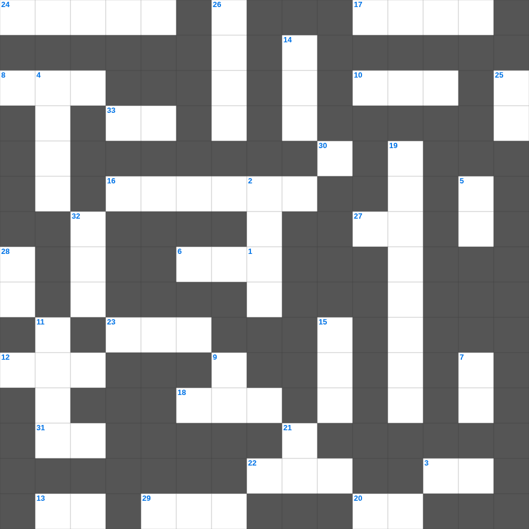

누가복음: 잃은 양의 비유
📌 서비스 정의
십자가로세로는 교회 주보와 주일학교에서 사용할 수 있는 성경 기반 가로세로 퍼즐 서비스입니다. 성경 인물, 사건, 핵심 구절을 바탕으로 제작되었습니다. 온라인 풀이 및 인쇄 기능을 제공합니다.
📖 누가복음란?
누가복음은 의사 출신 저자 누가가 예수님을 모든 인류, 특히 소외된 자들을 위한 구원자로 그려낸 복음서로, 자세한 역사적 정황과 비유들이 풍부합니다.
📚 누가복음의 주요 사건·주제
예수님의 탄생 이야기(목자들과 천사) · 선한 사마리아인 비유 · 탕자(잃은 아들) 비유 · 예수님의 십자가와 부활 · 엠마오로 가는 길의 만남
누가복음의 말씀을 퀴즈로 배우는 누가복음 무료 성경퀴즈입니다. 가로 힌트와 세로 힌트를 보고 35개의 단어를 맞춰보세요. 인쇄도 가능하고 정답 확인도 바로 되니 소그룹 모임이나 가정 예배 시간에도 활용하실 수 있습니다.

📝 가로 힌트
1. 공의를 마르지 않는 이것 같이 흐르게 하라
3. 땅의 짐승과 기는 것(여섯째 날)
6. 나아만 장군이 씻은 강
6. 나아만 장군이 문둥병을 고친 강
6. 예수님이 세례받으신 강
8. 사드락과 친구들이 던져진 곳
10. 끝까지 이것하는 자는 구원을 얻으리라
12. 예수님이 무화과나무를 저주하신 곳 근처
13. 예수님의 무덤을 막았던 것
16. 제사장의 관에 붙인 금패 글귀
17. 거짓 이것들이 일어나 많은 사람을 미혹함
18. 솔로몬이 성전 건축을 위해 백향목을 가져온 곳
20. 성막 입구의 방향
22. 솔로몬 성전의 두 기둥 이름 중 다른 하나
23. 언어가 혼잡하게 된 곳
24. 언약궤 안에 들어있는 아론의 물건
27. 지성소와 성소를 나누는 두꺼운 천
29. 성경의 맨 처음 책
30. 온유한 자가 기업으로 받는 것
31. 70그루 종려나무와 12샘이 있던 오아시스
📝 세로 힌트
2. 오순절 다락방에서 성령이 임한 사건
4. 인류 최초의 옷은 무슨 잎으로 만들었나?
5. 나는 마음이 이것하고 겸손하니
7. 여호와 이것: 승리의 하나님
9. 요나가 다시스로 가기 위해 배를 탄 항구
11. 빌립이 전도한 제자
14. 바울이 로마로 가다 난파된 섬
15. 세계 최초의 소방관은 누구일까요? (불 속에서 살아남음)
19. 베드로가 환상을 본 지붕
21. 인류 최초의 동물원 원장은 누구일까요?
25. 열 처녀 비유에서 준비해야 했던 것
26. 바울이 복음을 전하다가 돌에 맞은 곳
28. 너희가 서로 사랑하면 모든 사람이 너희가 내 이것인 줄 알리라
32. 하나님과 화목하기 위해 드리는 제사
🧩 이 퍼즐에서 배우는 내용
이 퍼즐은 누가복음: 잃은 양의 비유의 핵심 단어와 개념을 자연스럽게 복습할 수 있도록 구성되었습니다. 주일학교 수업이나 개인 성경공부에서 학습 내용을 점검하는 용도로 바로 활용할 수 있습니다.
🧑🏫 교회 교육 자료 활용
이 퍼즐은 주일학교 교재 추천 자료로 활용할 수 있고, 주일학교 주보에 넣기 좋은 분량으로 구성되어 있습니다. 수업용 주일학교 교안에 활동지로 붙이거나, 예배 후 복습용 주일학교 공과교재로 바로 사용할 수 있습니다.
🏷️ 키워드
누가복음 무료 성경퀴즈, 누가복음, 십자가로세로, 성경퀴즈, 말씀퀴즈, 가로세로퍼즐, 주일학교 교재 추천, 주일학교 주보, 주일학교 교안, 주일학교 공과교재